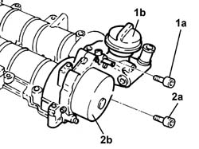
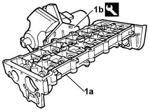
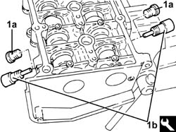
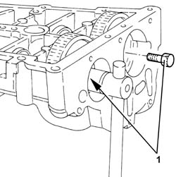
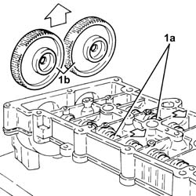
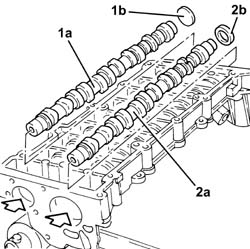
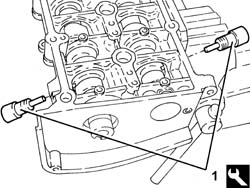
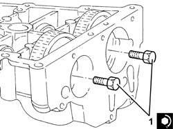
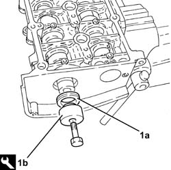

1036L14 CAMSHAFTS IN CAMSHAFT HOUSING - R.R. WITH CAMSHAFT HOUSING REMOVED - INCLUDES POSSIBLE REPLACEMENT. OF CAMSHAFT HOUSING
- Path
- Procedures > 10 ENGINE > 1036 TIMING SYSTEM > 1036L CAMSHAFT (2) IN CAMSHAFT HOUSING (1) > 1036L14 CAMSHAFTS IN CAMSHAFT HOUSING - R.R. WITH CAMSHAFT HOUSING REMOVED - INCLUDES POSSIBLE REPLACEMENT. OF CAMSHAFT HOUSING
- Kind
- repair procedure (removal / refitting; the operation number is the code)
- Applies to
- engines: 2.4 JTD 20v; all production periods
- Interactive page
- https://sloeber94.github.io/elrnDB-fCrm/en/#/194003990
Applies to: engines: 2.4 JTD 20v; all production periods
 Removing
Removing
 Refitting
Refitting1. Undo the fixing bolt (1a) and renive the engine oil filler fitting (1b).
2. Undo the retaining bolts (2a) and remove the brake servo vacuum unit (2b).
Keep the gaskets underneath.

Applies to: engines: 2.4 JTD 20v; all production periods
1. Position the cylinder head extension (1a) in a vice using the tool (1b).
Description | Code | Function | |
|---|---|---|---|
1b | Support | 1.860.470.001 | Securing camshaft housing in vice |

Applies to: engines: 2.4 JTD 20v; all production periods
Check that the camshaft endfloat is within the recommended values using a dial gauge.
If the camshaft endfloat is not within the recommended values, replace the worn components when reassembling the cylinder head.
1. Remove plug (1a) and fit camshaft timing tools (1b) to the cylinder head extension.
Description | Code | Function | |
|---|---|---|---|
1b | Templates | 1.870.896.900 | Camshaft timing adjustment |

Applies to: engines: 2.4 JTD 20v; all production periods
1. Undo the bolts fixing the camshaft gears.

Applies to: engines: 2.4 JTD 20v; all production periods
Remove the camshaft timing tools from the cylinder head extension.
Description | Code | Function | |
|---|---|---|---|
. | Templates | 1.870.896.900 | Camshaft timing adjustment |
1. Wtihdraw the camshafts (1a), as far as necessary and remove the camshaft gears (1b).

Applies to: engines: 2.4 JTD 20v; all production periods
1. Using a suitable drift, extract the inlet side camshaft (1a) and plug (1b).
2. Using a suitable drift, extract the exhaust side camshaft (2a) and oil seal (2b).
Remove the exhaust side camshaft oil seal.

Applies to: engines: 2.4 JTD 20v; all production periods
Refitting
RemovingPlace the camshafts in their housings.
Place the camshaft gears in their housings and secure them without tightening the bolts.
1. Fit the camshaft timing tools.
Description | Code | Function | |
|---|---|---|---|
1 | Templates | 1.870.896.900 | Camshaft timing adjustment |

Applies to: engines: 2.4 JTD 20v; all production periods
1. Tighten the camshaft gear fixing bolts to the recommended torque.

Applies to: engines: 2.4 JTD 20v; all production periods
1. Fit the exhaust side camshaft front oil seal (1a) using the tool (1b).
Description | Code | Function | |
|---|---|---|---|
1b | Fitting tool | 1.870.896.800 | Fitting camshaft oil seal |

Applies to: engines: 2.4 JTD 20v; all production periods
Fit the intake side camshaft plug.
Refit the exhaust side camshaft toothed pulley and secure by screwing in the bolt without tightening.
Remove the support tool complete with cylinder head extension from the vice and separate them.
Fit the vacuum unit complete with gasket and fasten it tightening the fixing bolts to the recommended torque.
Fit the engine oil filler complete with gasket and fasten it tightening the fixing bolts to the recommended torque.